Логотип и брендинг «Сокола» — базово
UX-пакет 25.10 · три направления на выбор, без правки кода пульта
Рекомендация: А «Пике» как знак, правило цвета от Б. Это единственный из трёх вариантов, где знак объясняет название: птица читается и в 16 px, и на обложке. Рамки трека и язык кольцо/точка — уже в самом пульте и работают там без логотипа.
Сейчас знак — угловые скобки с прямоугольником: это общий значок «видоискатель», у него нет связи с названием, и он в 16 px распадается на тонкие линии. Ниже — как есть, образцы ниши, три направления рядом.
1. Как сейчас
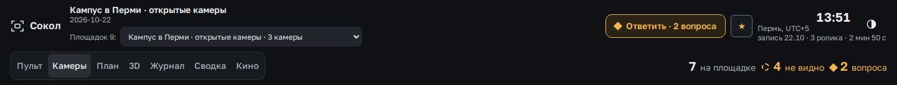
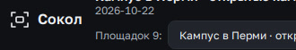
Текущий знак в 16, 32 и 64 px
- Что есть: линейный знак (штрих 1,75 на сетке 24: скобки + прямоугольник), слово «Сокол» Golos Text 600, цвета — только токены пульта: чёрно-серый, янтарь для «внимания». Фирменных цветов, favicon, отдельного латинского написания и обложки отчёта нет — в коде найден только встроенный SVG-знак в шапке (`index.html`, `site.html`, `qm-page.html`, `report.html`).
- Что слабо: знак — общий «видоискатель», его нарисует любой сервис видео; нет ни сокола, ни идеи; тонкий штрих в 16 px теряет внутренний прямоугольник; знак и слово живут рядом, а не как один лок-ап; цвет бренда не определён — янтарь занят под «внимание».
- Что сильное и остаётся: Golos Text с кириллицей, монохромная сдержанность пульта, светлая тема первой. Любой новый знак должен ужиться с этим.
2. Образцы ниши
Шапки сайтов 11 продуктов (кадры сняты 25.10, лого — их собственность, здесь только для сравнения). Ссылки — на сайты.
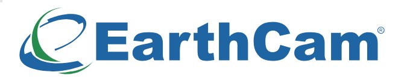
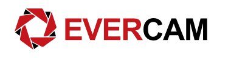
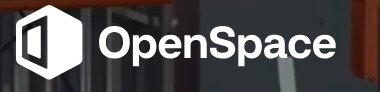
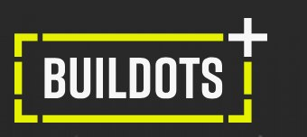
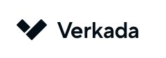
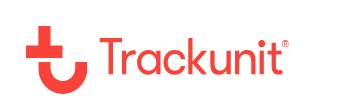
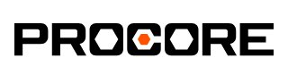
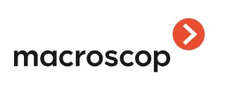
Что работает в этой нише
- Простая геометрия, 1–2 формы: Verkada, OpenSpace, Trackunit, TrueLook — форма простая, малый размер и монохром должны держаться (моя оценка по виду, 16 px у них не мерил).
- Один акцентный цвет и тёмная поверхность: Buildots (лайм), TrueLook (зелёный), Trackunit (красный); остальное — серое или чёрное.
- Птица/животное возможны: Samsara — острые плоскости, не рисунок; у нас названием задано заранее.
- Рамка и объектив — самые частые мотивы (Buildots, Evercam, TrueLook, EarthCam): отличаться нужно идеей, не самой рамкой.
- Слово часто сильнее знака (Procore, Komatsu): чистая гарнитура и разрядка делают половину узнаваемости.
- Российские продукты ниши (Macroscop и др.) — слово строчными + маленький знак; брендбуков в открытом виде не нашёл — архив брендбуков (Branding Style Guides) в хранилище только описан, не просматривался: не проверено, есть ли там нужные нам.
3. Три направления
Все знаки — чистая геометрия (path, круги, прямоугольники), слова — векторные контуры шрифта, поэтому одинаково выглядят везде. Правило для всех трёх: цвет бренда не заходит в пульт — там цвет только у состояний (янтарь, красная опасная зона, бирюзовые люди, цвета подрядчиков), поэтому в шапке знак цвета текста.
А · «Пике»
Сокол сверху, в пикировании: взгляд сверху и точка, в которую он бьёт. Знак читается как птица и как стрелка вниз на площадку.
Читаемость в 16, 32 и 64 px
Цвета
- ink #14171A на #F3F4F6: 16.3:1
- ink на сигнальный лайм #D4F03C: 14.0:1
- #D4F03C на тёмном #0F1114: 14.7:1
- #D4F03C на светлом #F3F4F6: 1.2:1 — только графика ≥ 3:1, не текст
Где акцент: плашка под знаком, обложки, favicon-подложка; на тёмном — цвет знака.
Шрифт
Сокол · SOKOL
Onest 600 (кириллица есть, OFL). Текст интерфейса остаётся Golos Text — он уже в пульте.
За и против
За: самый узнаваемый и «птичий»; хорошо держит 16 px как силуэт; есть что нарисовать на обложке и в наклейке.
Против: «самолёт или ласточка» — без подписи читается неоднозначно; сокол как образ — самый ожидаемый ход для названия.
В шапке пульта
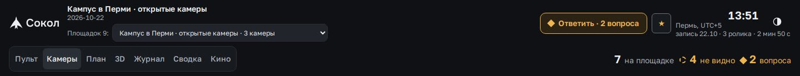
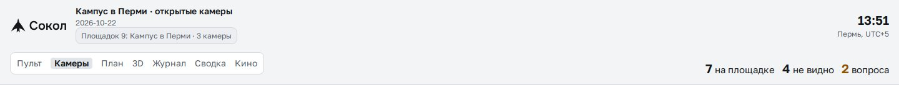
Обложка PDF-отчёта
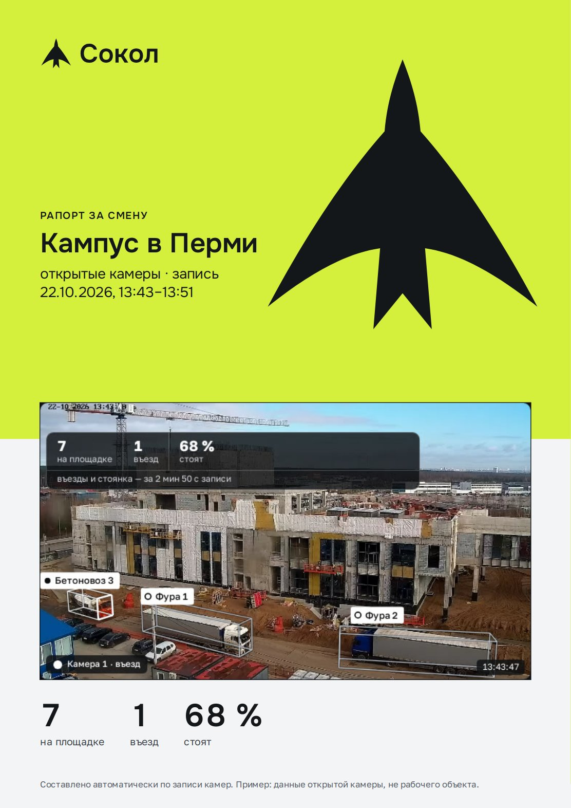
Файлы: знак · лок-ап RU · лок-ап LAT · слово


Б · «Кадр»
Рамка трека — то, что ведёт машину на видео. Угловые скобки и точка со следом: знак совпадает с тем, что уже рисует пульт поверх ролика.
Читаемость в 16, 32 и 64 px
Цвета
- ink #14171A на #F3F4F6: 16.3:1
- вторичный #565C66 на #F3F4F6: 6.1:1; #A9B0BA на #0F1114: 8.6:1
Где акцент: цвет — только состояниям внутри пульта; знак — чернилами или белым.
Шрифт
Сокол · SOKOL
Golos Text 600, разрядка +16 % (уже в пульте). Текст интерфейса остаётся Golos Text — он уже в пульте.
За и против
За: продолжение того, что есть: те же скобки, но с идеей; совпадает с «рамками» на показе; монохром, как просили.
Против: про камеру вообще, не про сокола: у EarthCam, Evercam, TrueLook рамки и объективы тоже; без птицы название не подкреплено.
В шапке пульта
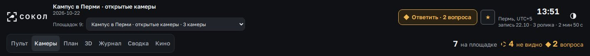
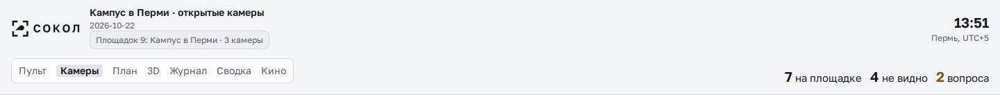
Обложка PDF-отчёта
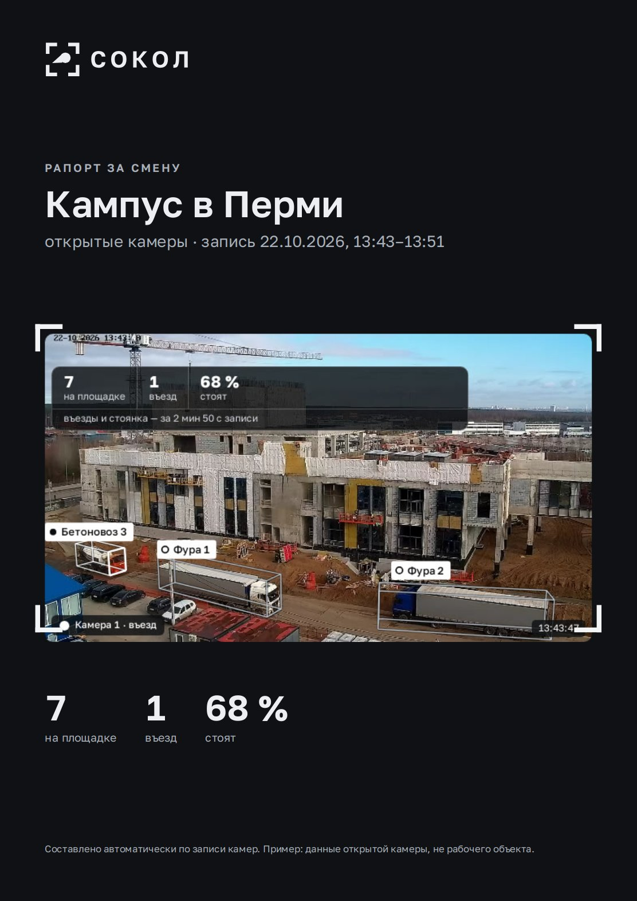
Файлы: знак · лок-ап RU · лок-ап LAT · слово


В · «Кольцо и точка»
Язык состояний самого пульта: кольцо — «стоит», сплошная точка — «едет». Буква С из кольца с точкой в проёме; в слове две О — точка и кольцо.
Читаемость в 16, 32 и 64 px
Цвета
- ink #14171A на #E8E5DE: 14.3:1
- ink на сигнальный оранжевый #E85D04: 5.1:1
- #E85D04 на тёмном #0F1114: 5.4:1
- #E85D04 на светлом #E8E5DE: 2.8:1 — только графика ≥ 3:1, не текст
Где акцент: только точка и обложки; в пульте точка — цвета текста.
Шрифт
Сокол · SOKOL
Montserrat 700 (кириллица есть, OFL). Текст интерфейса остаётся Golos Text — он уже в пульте.
За и против
За: редкая идея «только наша»: знак выведен из продукта, а не из слова; в 16 px — чистое кольцо, никакой мелочи; точку можно оживить (едет → встала).
Против: птицы нет совсем — «Сокол» объясняет только слово; «C с точкой» — частая форма, сходство с чужими знаками не проверено.
В шапке пульта
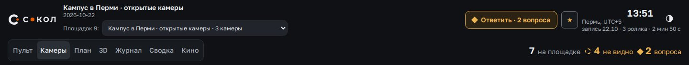
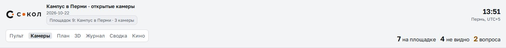
Обложка PDF-отчёта
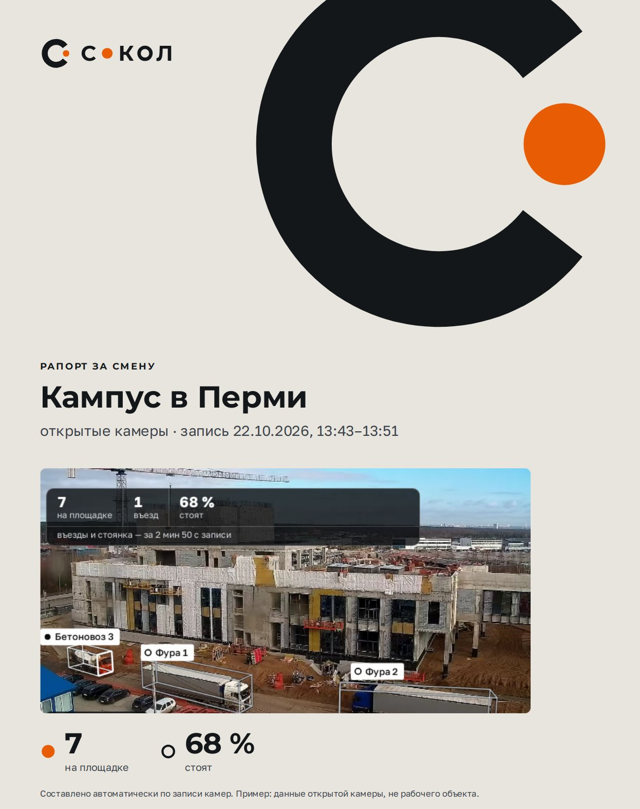
Файлы: знак · лок-ап RU · лок-ап LAT · слово


4. Рядом и рекомендация
| А «Пике» | Б «Кадр» | В «Кольцо и точка» | |
|---|---|---|---|
| Идея | птица сверху | рамка трека | язык состояний |
| 16 px | силуэт держится | нужен упрощённый знак без следа | чистое кольцо, держится лучше всех |
| Связь с названием | прямая | нет | нет (только в слове) |
| Связь с пультом | через «взгляд сверху» | прямая: рамки на видео | прямая: точка и кольцо в списке машин |
| Риск | «самолёт», ожидаемый ход | похож на соседей по нише | похож на другие «C с точкой» |
Рекомендую А «Пике». Птица — самая понятная заказчику на показе («Сокол» → сокол), знак держится в 16 px и в одном цвете, обложка отчёта получается выразительной без декора. Из Б берём правило: в пульте всё монохромное, а рамки на видео — отдельный язык продукта. Из В — как идею для «живого» элемента (точка едет → встала) в анимации загрузки, не в логотипе.
Если нужна одна идея «только наша» — В: она выведена из продукта, но потребует от заказчика объяснения («кольцо — стоит»). На показе завтра безопаснее А.
До внедрения: знак 16 px проверить в реальной вкладке браузера (здесь — в странице); проверить схожесть А с чужими птицами по товарным знакам (классы 9 и 42) — не проверено; решение Юлая, потом правка шапки пульта и favicon одним небольшим этапом.
Исходники и скрипты: .artifacts/sokol/ux-2510/brand/ (marks.py — знаки, build.py — слова-контуры).